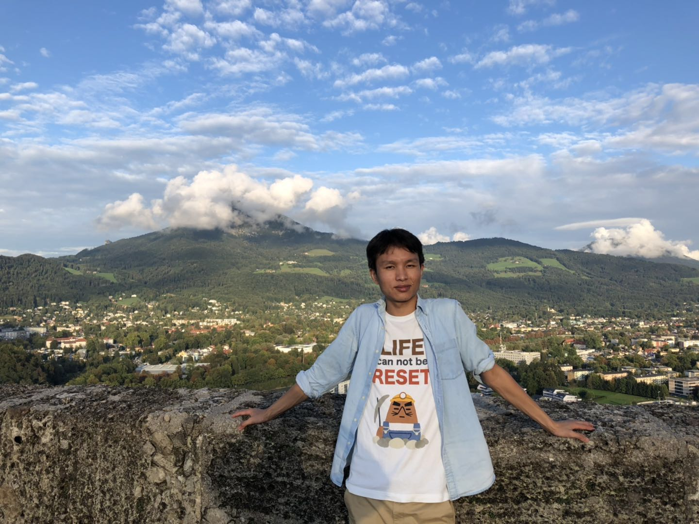

|  |
Anlin ZhengAssociate Researcher at Megvii Technology (Face++)Email: zhenganlin [at] megvii dot com |
|
I am a associate researecher at Megvii Technology (Face++) Inc. Previously I was working on computer vision with deep learning approaches, advised by Prof. Jia Li in Beihang University. I am working in Basemodel Group, supervised by Dr. Xiangyu Zhang in Megvii Research Department. Our work is about basemodel design and major computer vision tasks such as object detection, pose estimation, semantic segmentation and so on. We are hiring interns and employees! Send me your resume and we could work together for the dream of Power Human with AI ! | |
Publications
|
|
Honors & Awards
|
|